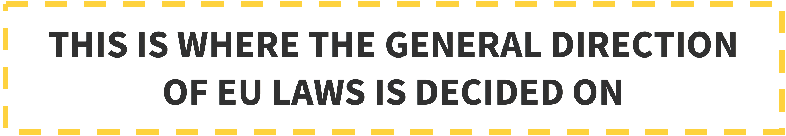
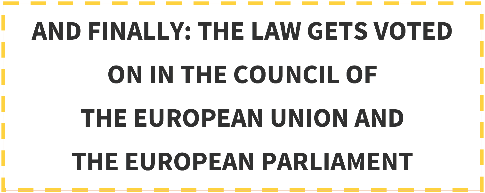
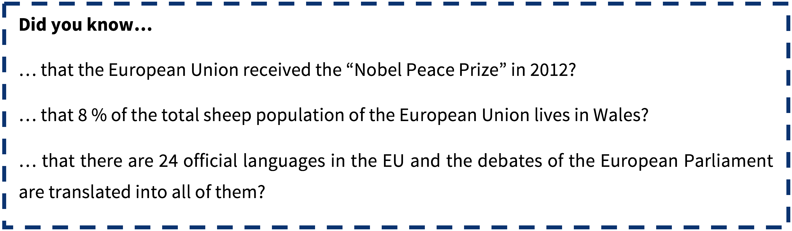

by Kathi Radler, Member of EYP Austria’s Academic Quality Team 2015/16
Did you ever wonder how EU legislation is made? The European problems we agree on in just a couple of days are a matter of quite difficult processes in reality. You probably already got in touch with the institutions, the procedures and the competences of the European Union, but as it is a quite complicated system, the next section aims at refreshing your memory about its institutions and their most important activities.
Let’s start with the European Council: It consists of the heads of state or government and the President of the European Commission. The president of the European Council is elected for 2.5 years and is currently Donald Tusk from Poland, who must report to the European Parliament after each meeting. 4 times a year they all meet in Brussels, in order to discuss the general goals of the next year. It therefore does not really propose legislations - for example, in their last meeting this march they decided on general directions for an Energy Union in the EU and external relations with Russia and Ukraine, among other topics.
 The European Commission is the only institution empowered to initiate legislation. Nevertheless, also the European Parliament, as well as member states and citizens (> 100.000 citizens from at least seven different EU countries) can ask the European Commission to submit a proposal.
The European Commission is the only institution empowered to initiate legislation. Nevertheless, also the European Parliament, as well as member states and citizens (> 100.000 citizens from at least seven different EU countries) can ask the European Commission to submit a proposal.
Consisting of 28 Commissioners of every member country, the European Commission furthermore manages the EU-budget and allocates the funding, enforces EU law together with the Court of Justice and represents the EU internationally. But the European Commission also has its limitations – they are not allowed to command troops, raise taxes or decide on foreign policies, as this is under the power of national legislation. The commissioners are supported by their “Directorate Generals”, which are divided into different areas, such as administration, law, economists or translators. Current president of the European Commission is Jean Claude Juncker.

But we already had… No, wait – the European Council and the Council of the European Union are two different institutions. To make it even more puzzling: it is also not the Council of Europe – this is not an EU institution at all…
Let’s stop the confusion and get started: The Council of the European Union consists of the ministers of every Member State, therefore it is also referred to as the “Council of Ministers”. It is not presided by a person, but by a state that rotates every six months. Currently this is Latvia.
They have quite a lot to do - under their main tasks you find: passing the EU laws jointly with the European Parliament, approving the EU budget, coordinating the broad economic policies of the EU member countries, signing agreements between the EU and other countries, developing the EU’s foreign and defence policies and the coordination of cooperation between courts and police forces of member countries.

Sounds familiar? The namesake of our European Youth Parliament consists of 751 members, directly elected by the EU’s citizens every 5 years. They gather into different fractions according to their political stance. Since the last election in 2014, the European People’s Party (Centre-Right) hast the most seats, followed by the Progressive Alliance of Socialists and Democrats (Centre-Left). President of the European Parliament is Martin Schulz from Germany.
The European Parliament works closely together with the European Commission, as they both have a say on the EU budget and jointly have to decide on EU laws. Furthermore, they scrutinise other EU institutions, in order to ensure that they are working democratically.